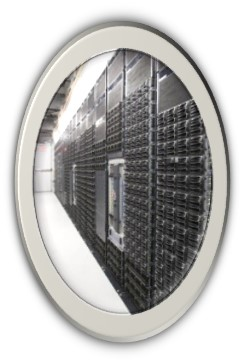
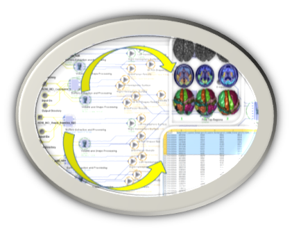
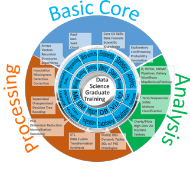
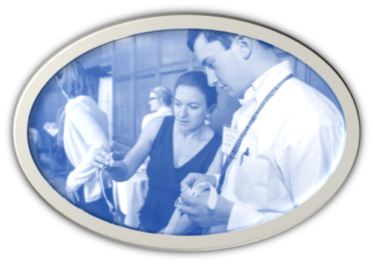

To support a vibrant research program, entice active collaborations and promote effective training the CSCD Center develops, manages and disseminates a collection of Shared Resources. You can also fill in the CSCD web-inquiry form. You can also see the CSCD FAQ page for answers of frequently asked questions.
Computational Infrastructure

CSCD Research projects are supported by databases
(MySQL/NoSQL), computational services and high-throughput
processing workflow. In addition to the
UMich FLUX services, CSCD investigators have access to a
powerful 1.5TB RAM, 20TB
storage, 40-core SOCR Server facilitating storage, retrieval,
processing and visualization of heterogeneous data. |
Methodological Consulting

CSCD faculty provide consultations on study-designs,
methodological challenges and service recipients. Collaborators,
Pilot
project investigators and other researchers are encouraged to contact the Center and discuss their
specific needs. |
Data Analytics

Data acquisition, management, aggregation, processing and
analysis are important components of all quantitative healthcare
studies. CSCD investigators provide support for data analytics,
high-throughput data analysis, protocol design, validation and
open-dissemination. You can see
here one example of a high-throughput data analytics workflow
(trans-proteomics pipeline). |
Training Opportunities

CSCD provides learning materials, instructional resources,
refreshers and self-guided activities supporting studies of
complexity, self-management of chronic disease, and data
analytics. The Center also periodically organizes training events and educational
activities. |